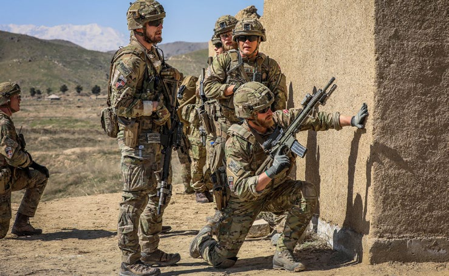
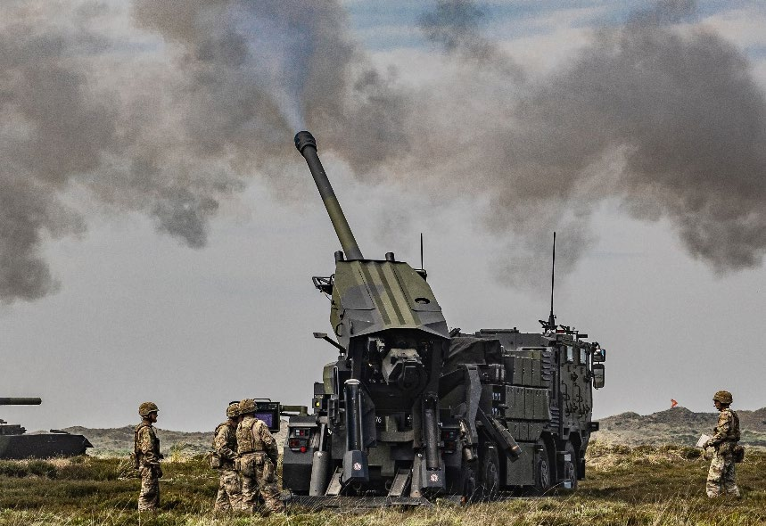
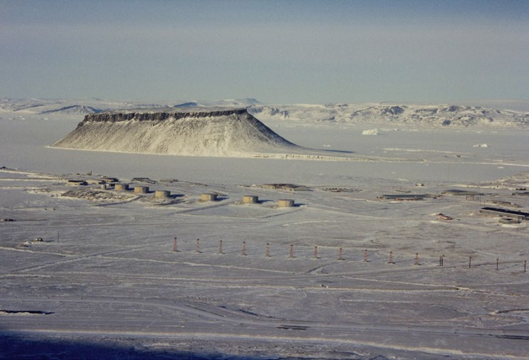

Fakta-ark 24: Danmarks
Áudio
sidde 132
Fakta-ark 24: Danmarks forsvars- og sikkerheds politik
Læremateriale Til Medborgerskabsprøven
sidde 133
I 1945, lige efter 2. Verdenskrig, blev Danmark medlem af FN*. I 1949, i starten af Den Kolde Krig*, blev Danmark medlem af NATO* sammen med blandt andet USA og en række andre vesteuropæiske lande. Medlemskabet af FN og NATO blev efter 2. verdenskrig grundlaget for Danmarks udenrigs- og sikkerhedspolitik.
Læremateriale Til Medborgerskabsprøven Fakta-Ark 24: Danmarks Forsvars- Og Sikkerhedspolitik
Dette fakta-ark handler om: • Danmarks udenrigspolitik siden 2. Verdenskrig
I årene efter 2. Verdenskrig og frem til omkring 1990 deltog Danmark i mange af FN’s fredsbevarende missioner. Danmark udsendte soldater for at hjælpe med at løse konflikter og skabe fred rundt om i verden, fx ved at sørge for at våben hviler blev overholdt og beskytte civilbefolkningen.
Efter afslutningen af Den Kolde Krig (cirka 1990) udviklede Danmark lidt efter lidt en ”aktivistisk udenrigspolitik”. Det betød, at Danmark begyndte at deltage mere aktivt i internationale konflikter, også i andet end fredsbevarende missi oner.
I 1990 begyndte Golfkrigen, da Irak besatte nabolandet Kuwait. På baggrund af en FN-beslutning ledte USA i 1991 en militær aktion, der skulle befri Kuwait. Danmark sendte et skib afsted som et bidrag til den internationale militære styrke. Skibet deltog dog ikke i aktive militære handlinger.
I begyndelsen af 1990’erne begyndte borgerkrigen i det tidligere Jugoslavien. Her blev danske soldater sendt ud som en del af FN’s styrker. De skulle være med til at skabe fred. I denne konflikt kom de i direkte kamp med serbiske styrker i Bosnien i 1994.
Også i Kosovo, som dengang var en provins i Serbien, var der borgerkrig i slut ningen af 1990’erne. Her blev det albanske befolkningsflertal udsat for overgreb fra regeringen. Efter lange forhandlinger uden resultat greb NATO militært ind i 1999. Danske jagerfly deltog i NATO’s aktioner.
Nye Mål Efter Terrorangrebet På Usa
Et vendepunkt for NATO og alle medlemslandene var terrorangrebet på USA den 11. september 2001. Her slog terrorister omkring 3.000 mennesker ihjel ved at kapre passagerfly og flyve dem ind i blandt andet ’World Trade Center’ i New York. Efter dette terrorangreb blev international bekæmpelse af terrorisme en vigtig opgave.
Tidligere havde NATO kun været klar til at reagere på trusler fra andre nationer. Men efter terrorangrebet tog NATO et nyt skridt i sit samarbejde. NATO ville også bekæmpe andre trusler mod medlemslandene, også terrortrusler fra terror grupper. Danmark deltog derfor i årene efter 2001 i militære missioner rundt omkring i verden for at bekæmpe terrorisme. Terrororganisationen Al Qaeda,

sidde 134
De danske soldater blev sammen med britiske soldater sendt til den sydlige Helmand-provins, der var en af de mest urolige i landet. I alt 44 danske soldater mistede livet. Efter 2014 var de danske udsendte soldaters opgave blevet at træne og støtte afghanerne, så de selv kunne stå for sikkerheden i landet – og siden er de danske soldater blevet trukket helt hjem. Efter 20 år med borgerkrig erobrede Taliban igen magten i Afghanistan i 2021. Danske tropper i Afghan
der stod bag angrebet på USA 11. september 2001, havde base i Afghanistan. Derfor invaderede styrker, ledet af NATO og med mandat fra FN, landet i oktober 2001 og afsatte den islamistiske Taliban-regering, der samarbejdede med Al Qaeda. I 2002 besluttede det danske Folketing at sende danske soldater til Afghanistan for at deltage i krigen.
Læremateriale Til Medborgerskabsprøven Fakta-Ark 24: Danmarks Forsvars- Og Sikkerhedspolitik
Danske tropper i Afghanistan.
I 2003 førte USA og en række andre lande krig mod Irak og landets diktator Saddam Hussein. Krigen begyndte, fordi Irak ikke samarbejdede om den nedrust ning*, som FN havde pålagt landet efter Golfkrigen i 1991. Og fordi USA mente, at Irak ulovligt havde udviklet masseødelæggelsesvåben*. Der blev dog aldrig fundet nogen masseødelæggelsesvåben.
Saddam Hussein blev fjernet fra magten i 2003. Bagefter var danske soldater sammen med soldater fra andre lande med til at genopbygge Irak efter krigen og skabe bedre levevilkår og demokrati for irakerne.
I 2011 besluttede man, at Danmark skulle deltage i en militær aktion i Libyen med mandat fra FN. Aktionen skulle beskytte civilbefolkningen mod overgreb fra landets diktator Muammar Al-Gaddafi. Danmark leverede fly til aktionen og gennemførte flere bombardementer.
Da terrorbevægelsen Islamisk Stat i 2014 erobrede store dele af Irak og Syrien, ledte USA en militær mission, der skulle bekæmpe terrorbevægelsen. Her deltog Danmark også med både fly og soldater, der skulle træne irakiske soldater.

sidde 135
Fjernelsen af Saddam Hussein i Irak og Muammar Al-Gaddafi i Libyen har dog ikke været uden problemer. I begge lande har der efterfølgende været mange konflikter – noget der ligner borgerkrig – mellem forskellige grupper.
Læremateriale Til Medborgerskabsprøven Fakta-Ark 24: Danmarks Forsvars- Og Sikkerhedspolitik
Ruslands besættelse af halvøen Krim i Ukraine i 2014 samt krigen i Ukraine siden 2022 har skabt bekymring for, om Rusland også vil angribe andre lande. NATO er derfor vendt tilbage til sit oprindelige fokus på at kunne forsvare sit eget territorium* mod angreb fra andre lande.
Derfor har Danmark for eksempel besluttet at bruge mange flere penge på forsvaret frem mod 2030, så vi sammen med de andre NATO-lande bedre vil kunne forsvare os mod et angreb. Desuden er det i 2024 besluttet, at der skal indkaldes flere soldater, og at værnepligten forlænges fra fire til 11 måneder.
Som reaktion på det russiske angreb på Ukraine har Vesten støttet Ukraine med våben og træning, så landet kan forsvare sig mod det russiske angreb. Og Vesten har også forsøgt at svække den russiske økonomi ved at forbyde salg af en række varer til Rusland samt forbyde køb af russisk olie. Mange vestlige virk somheder har trukket sig ud af Rusland.

sidde 136
Grønland, som er en del af det danske Rigsfællesskab, havde en stor betydning under den Kolde Krig. Grønland ligger tæt på både USA og det daværende Sovjet unionen, og man skulle flyve hen over Grønland for at tage den korteste rute mellem USA, Europa og Sovjetunionen. Den korteste vej for raketter i tilfælde af krig mellem USA og Rusland/Sovjetunionen går også hen over Grønland. Derfor havde Grønland en strategisk betydning i forhold til forsvarssamarbejdet, og i 1951 underskrev Danmark og USA en aftale om USA’s militære aktiviteter i Grønland. Samme år byggede amerikanerne en stor luftbase ved Qaanaaq (Thule) i det nordlige Grønland. På basen byggede USA også en radarstation, der kunne overvåge luftrummet over Grønland og havområder omkring Grønland, der blev brugt til søfart. Basen var vigtig for luftforsvaret af USA og NATO, og den bruges stadig af USA i dag, og har navnet Pituffik Space Base (Pituffik Rumbase).Den amerikanske base ved Qa
Rigsfællesskabet, Grønland Og Arktis
Læremateriale Til Medborgerskabsprøven Fakta-Ark 24: Danmarks Forsvars- Og Sikkerhedspolitik
Den amerikanske base ved Qaanaaq (Thule) i det nordlige Grønland.
Det varmere klima og afsmeltningen af isen i og omkring Grønland giver bedre mulighed for at finde olie, gas og mineraler, som før har været indefrosset. Og hvis havet omkring Arktis i fremtiden bliver isfrit store dele af året, åbner det for, at der kan komme nye, kortere skibsruter mellem verdens kontinenter.
Det danske inspektionsskib ’Vædderen’ patruljerer ved Grønlands kyst.

sidde 137
Læremateriale Til Medborgerskabsprøven Fakta-Ark 24: Danmarks Forsvars- Og Sikkerhedspolitik
Det danske inspektionsskib ’Vædderen’ patruljerer ved Grønlands kyst.
Det arktiske område er derfor stadig i fokus for dansk sikkerhedspolitik. De inter nationale stormagter USA, Rusland og Kina er dog alle interesserede i Arktis. Det er de, fordi landene har interesse i at beskytte deres eget land mod angreb fra andre. Men også fordi landene har økonomiske interesser i for eksempel minedrift og transport af varer med skib. Det kan udfordre Rigsfællesskabets mål om, at Arktis skal være et fredeligt område.
De seneste år har den amerikanske præsident Donald Trump (født 1946) udtrykt ønske om, at Grønland skal blive en del af USA. Dette ønske er dog blevet afvist af både den grønlandske og den danske regering.
I 2025 er det derfor også besluttet at styrke det danske forsvars tilstedeværelse omkring Grønland og ikke mindst for at kunne overvåge* området. Der er således besluttet at bruge købe nye skibe, der er særligt egnede sig til at sejle i arktisk klima og droner, der kan overvåge store områder over lange afstande.
Fonte: Læremateriale til Medborgerskabsprøven, SIRI.